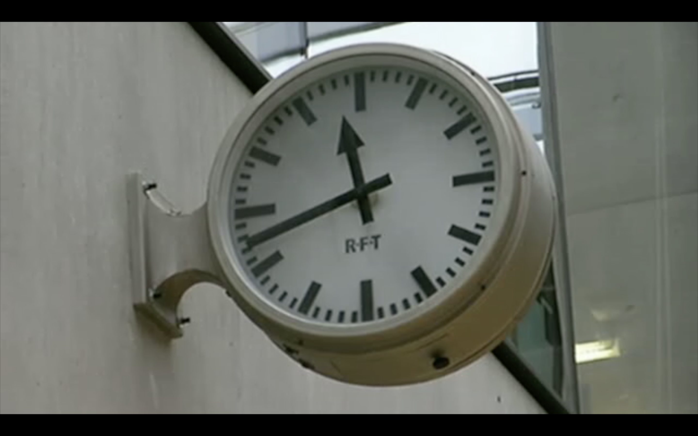
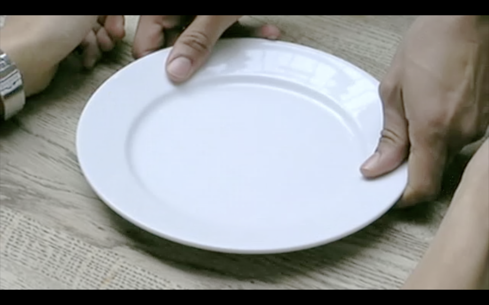
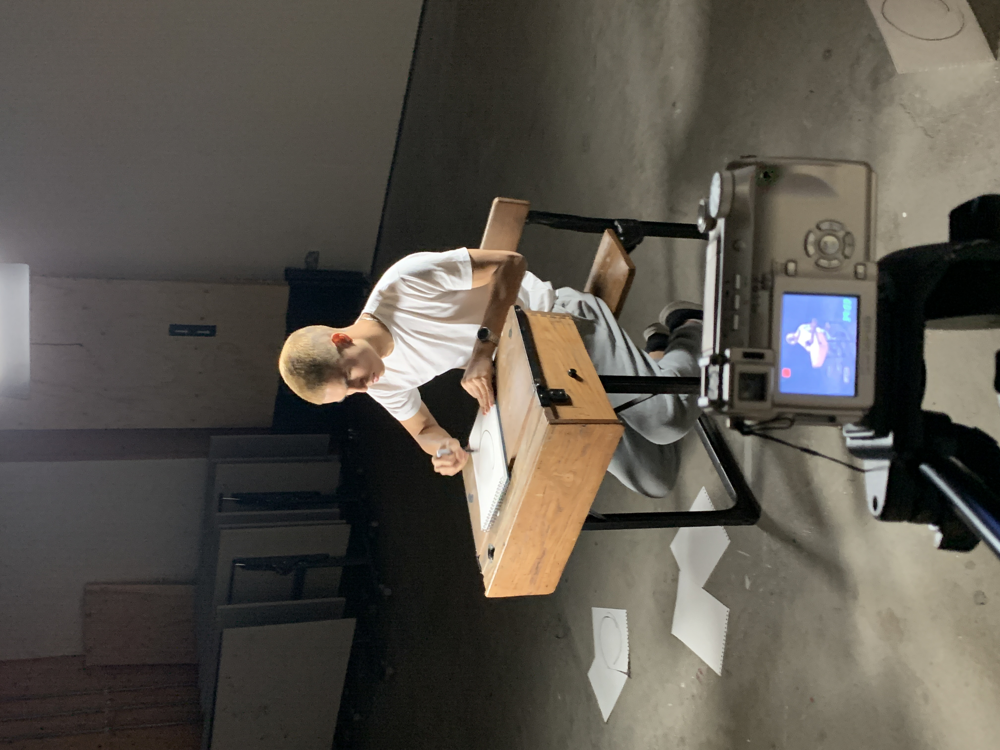
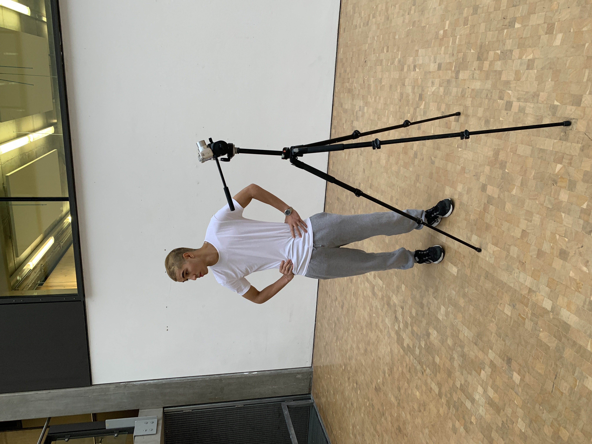

Project
Circular SonicsYear
2020Client
PersonalDiscipline
Moving image & sound designThis film was made in response to a breif that asked me to reinterperate footage of Josef Albers teaching at Yale in 1955. As an outcome, the project could take on any medium. I chose moving image and sound design as a means to convey circles and loops in visual and audible formats.



